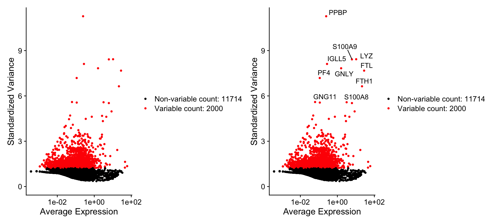
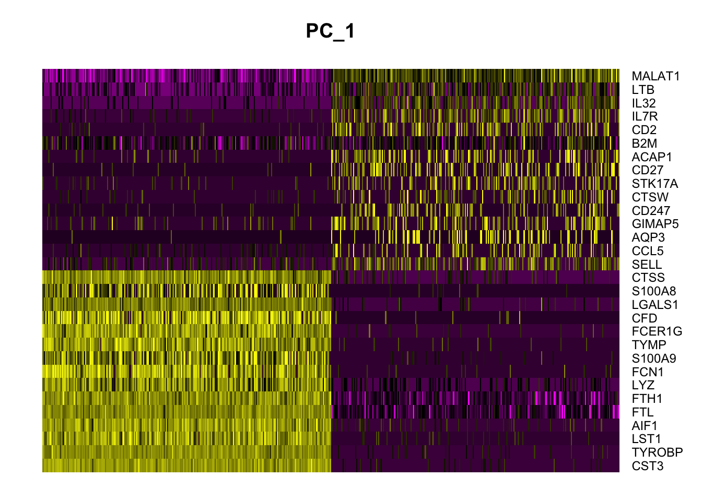
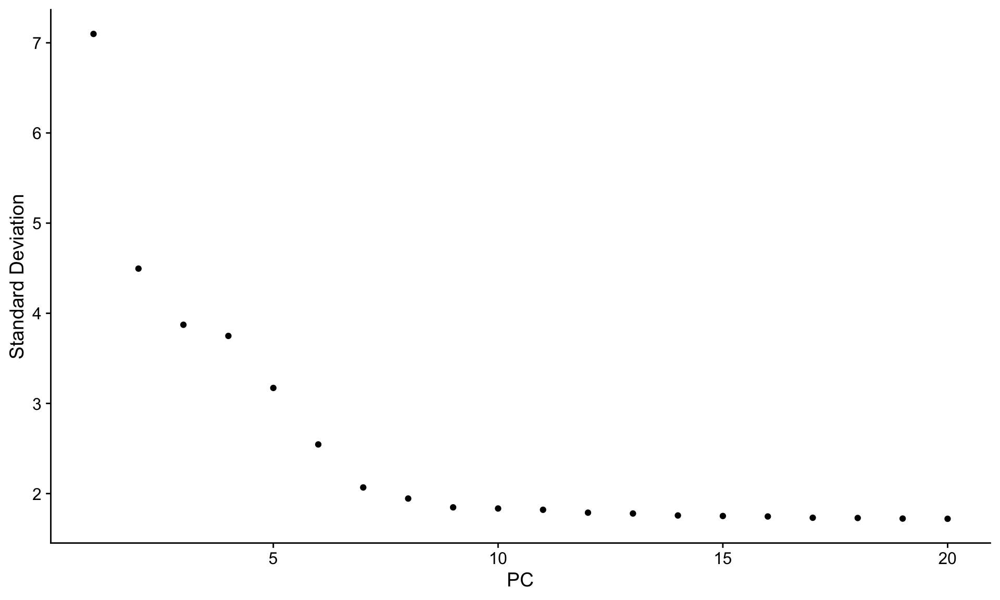

9 PCAs and UMAPs
9.1 Identification of highly variable features (feature selection)
We next calculate a subset of features that exhibit high cell-to-cell variation in the dataset (i.e, they are highly expressed in some cells, and lowly expressed in others). We and others have found that focusing on these genes in downstream analysis helps to highlight biological signal in single-cell datasets.
Our procedure in Seurat is described in detail here, and improves on previous versions by directly modeling the mean-variance relationship inherent in single-cell data, and is implemented in the FindVariableFeatures() function. By default, we return 2,000 features per dataset. These will be used in downstream analysis, like PCA.
pbmc <- FindVariableFeatures(pbmc, selection.method = 'vst', nfeatures = 2000)
# Identify the 10 most highly variable genes
top10 <- head(VariableFeatures(pbmc), 10)
# plot variable features with and without labels
plot1 <- VariableFeaturePlot(pbmc)
plot2 <- LabelPoints(plot = plot1, points = top10, repel = TRUE)## When using repel, set xnudge and ynudge to 0 for optimal resultsplot1 + plot2## Warning: Transformation introduced infinite values in continuous x-axis## Warning: Removed 1 rows containing missing values (geom_point).## Warning: Transformation introduced infinite values in continuous x-axis## Warning: Removed 1 rows containing missing values (geom_point).
9.2 Scaling the data
Next, we apply a linear transformation (‘scaling’) that is a standard pre-processing step prior to dimensional reduction techniques like PCA. The ScaleData() function:
- Shifts the expression of each gene, so that the mean expression across cells is 0
- Scales the expression of each gene, so that the variance across cells is 1
- This step gives equal weight in downstream analyses, so that highly-expressed genes do not dominate
- The results of this are stored in
pbmc$RNA@scale.data
all.genes <- rownames(pbmc)
pbmc <- ScaleData(pbmc, features = all.genes)## Centering and scaling data matrixThis step takes too long! Can I make it faster?
Scaling is an essential step in the Seurat workflow, but only on genes that will be used as input to PCA. Therefore, the default in ScaleData() is only to perform scaling on the previously identified variable features (2,000 by default). To do this, omit the features argument in the previous function call, i.e.
# pbmc <- ScaleData(pbmc)DoHeatmap()) require genes in the heatmap to be scaled, to make sure highly-expressed genes don’t dominate the heatmap. To make sure we don’t leave any genes out of the heatmap later, we are scaling all genes in this tutorial.
How can I remove unwanted sources of variation, as in Seurat v2?
In Seurat v2 we also use the ScaleData() function to remove unwanted sources of variation from a single-cell dataset. For example, we could ‘regress out’ heterogeneity associated with (for example) cell cycle stage, or mitochondrial contamination. These features are still supported in ScaleData() in Seurat v3, i.e.:
# pbmc <- ScaleData(pbmc, vars.to.regress = 'percent.mt')SCTransform(). The method is described in our paper, with a separate vignette using Seurat v3 here. As with ScaleData(), the function SCTransform() also includes a vars.to.regress parameter.
9.3 Perform linear dimensional reduction
Next we perform PCA on the scaled data. By default, only the previously determined variable features are used as input, but can be defined using features argument if you wish to choose a different subset.
pbmc <- RunPCA(pbmc, features = VariableFeatures(object = pbmc))## PC_ 1
## Positive: CST3, TYROBP, LST1, AIF1, FTL, FTH1, LYZ, FCN1, S100A9, TYMP
## FCER1G, CFD, LGALS1, S100A8, CTSS, LGALS2, SERPINA1, IFITM3, SPI1, CFP
## PSAP, IFI30, SAT1, COTL1, S100A11, NPC2, GRN, LGALS3, GSTP1, PYCARD
## Negative: MALAT1, LTB, IL32, IL7R, CD2, B2M, ACAP1, CD27, STK17A, CTSW
## CD247, GIMAP5, AQP3, CCL5, SELL, TRAF3IP3, GZMA, MAL, CST7, ITM2A
## MYC, GIMAP7, HOPX, BEX2, LDLRAP1, GZMK, ETS1, ZAP70, TNFAIP8, RIC3
## PC_ 2
## Positive: CD79A, MS4A1, TCL1A, HLA-DQA1, HLA-DQB1, HLA-DRA, LINC00926, CD79B, HLA-DRB1, CD74
## HLA-DMA, HLA-DPB1, HLA-DQA2, CD37, HLA-DRB5, HLA-DMB, HLA-DPA1, FCRLA, HVCN1, LTB
## BLNK, P2RX5, IGLL5, IRF8, SWAP70, ARHGAP24, FCGR2B, SMIM14, PPP1R14A, C16orf74
## Negative: NKG7, PRF1, CST7, GZMB, GZMA, FGFBP2, CTSW, GNLY, B2M, SPON2
## CCL4, GZMH, FCGR3A, CCL5, CD247, XCL2, CLIC3, AKR1C3, SRGN, HOPX
## TTC38, APMAP, CTSC, S100A4, IGFBP7, ANXA1, ID2, IL32, XCL1, RHOC
## PC_ 3
## Positive: HLA-DQA1, CD79A, CD79B, HLA-DQB1, HLA-DPB1, HLA-DPA1, CD74, MS4A1, HLA-DRB1, HLA-DRA
## HLA-DRB5, HLA-DQA2, TCL1A, LINC00926, HLA-DMB, HLA-DMA, CD37, HVCN1, FCRLA, IRF8
## PLAC8, BLNK, MALAT1, SMIM14, PLD4, LAT2, IGLL5, P2RX5, SWAP70, FCGR2B
## Negative: PPBP, PF4, SDPR, SPARC, GNG11, NRGN, GP9, RGS18, TUBB1, CLU
## HIST1H2AC, AP001189.4, ITGA2B, CD9, TMEM40, PTCRA, CA2, ACRBP, MMD, TREML1
## NGFRAP1, F13A1, SEPT5, RUFY1, TSC22D1, MPP1, CMTM5, RP11-367G6.3, MYL9, GP1BA
## PC_ 4
## Positive: HLA-DQA1, CD79B, CD79A, MS4A1, HLA-DQB1, CD74, HLA-DPB1, HIST1H2AC, PF4, TCL1A
## SDPR, HLA-DPA1, HLA-DRB1, HLA-DQA2, HLA-DRA, PPBP, LINC00926, GNG11, HLA-DRB5, SPARC
## GP9, AP001189.4, CA2, PTCRA, CD9, NRGN, RGS18, GZMB, CLU, TUBB1
## Negative: VIM, IL7R, S100A6, IL32, S100A8, S100A4, GIMAP7, S100A10, S100A9, MAL
## AQP3, CD2, CD14, FYB, LGALS2, GIMAP4, ANXA1, CD27, FCN1, RBP7
## LYZ, S100A11, GIMAP5, MS4A6A, S100A12, FOLR3, TRABD2A, AIF1, IL8, IFI6
## PC_ 5
## Positive: GZMB, NKG7, S100A8, FGFBP2, GNLY, CCL4, CST7, PRF1, GZMA, SPON2
## GZMH, S100A9, LGALS2, CCL3, CTSW, XCL2, CD14, CLIC3, S100A12, CCL5
## RBP7, MS4A6A, GSTP1, FOLR3, IGFBP7, TYROBP, TTC38, AKR1C3, XCL1, HOPX
## Negative: LTB, IL7R, CKB, VIM, MS4A7, AQP3, CYTIP, RP11-290F20.3, SIGLEC10, HMOX1
## PTGES3, LILRB2, MAL, CD27, HN1, CD2, GDI2, ANXA5, CORO1B, TUBA1B
## FAM110A, ATP1A1, TRADD, PPA1, CCDC109B, ABRACL, CTD-2006K23.1, WARS, VMO1, FYBSeurat provides several useful ways of visualizing both cells and features that define the PCA, including VizDimReduction(), DimPlot(), and DimHeatmap()
# Examine and visualize PCA results a few different ways
print(pbmc$pca, dims = 1:5, nfeatures = 5)## PC_ 1
## Positive: CST3, TYROBP, LST1, AIF1, FTL
## Negative: MALAT1, LTB, IL32, IL7R, CD2
## PC_ 2
## Positive: CD79A, MS4A1, TCL1A, HLA-DQA1, HLA-DQB1
## Negative: NKG7, PRF1, CST7, GZMB, GZMA
## PC_ 3
## Positive: HLA-DQA1, CD79A, CD79B, HLA-DQB1, HLA-DPB1
## Negative: PPBP, PF4, SDPR, SPARC, GNG11
## PC_ 4
## Positive: HLA-DQA1, CD79B, CD79A, MS4A1, HLA-DQB1
## Negative: VIM, IL7R, S100A6, IL32, S100A8
## PC_ 5
## Positive: GZMB, NKG7, S100A8, FGFBP2, GNLY
## Negative: LTB, IL7R, CKB, VIM, MS4A7VizDimLoadings(pbmc, dims = 1:2, reduction = 'pca')
DimPlot(pbmc, reduction = 'pca')
In particular DimHeatmap() allows for easy exploration of the primary sources of heterogeneity in a dataset, and can be useful when trying to decide which PCs to include for further downstream analyses. Both cells and features are ordered according to their PCA scores. Setting cells to a number plots the ‘extreme’ cells on both ends of the spectrum, which dramatically speeds plotting for large datasets. Though clearly a supervised analysis, we find this to be a valuable tool for exploring correlated feature sets.
DimHeatmap(pbmc, dims = 1, cells = 500, balanced = TRUE)
DimHeatmap(pbmc, dims = 1:15, cells = 500, balanced = TRUE)
9.4 Determine the ‘dimensionality’ of the dataset
To overcome the extensive technical noise in any single feature for scRNA-seq data, Seurat clusters cells based on their PCA scores, with each PC essentially representing a ‘metafeature’ that combines information across a correlated feature set. The top principal components therefore represent a robust compression of the dataset. However, how many components should we choose to include? 10? 20? 100?
Note: The seurat developers suggest using a JackStraw resampling test to determine this. See Macosko et al, and the original pbmc3 vignette. We’re going to use an Elbow Plot instead here, because its much quicker.
An alternative heuristic method generates an ‘Elbow plot’: a ranking of principle components based on the percentage of variance explained by each one (ElbowPlot() function). In this example, we can observe an ‘elbow’ around PC9-10, suggesting that the majority of true signal is captured in the first 10 PCs.
ElbowPlot(pbmc)
Identifying the true dimensionality of a dataset – can be challenging/uncertain for the user. We therefore suggest these three approaches to consider. The first is more supervised, exploring PCs to determine relevant sources of heterogeneity, and could be used in conjunction with GSEA for example. The second implements a statistical test based on a random null model, but is time-consuming for large datasets, and may not return a clear PC cutoff. The third is a heuristic that is commonly used, and can be calculated instantly. In this example, all three approaches yielded similar results, but we might have been justified in choosing anything between PC 7-12 as a cutoff.
We chose 10 here, but encourage users to consider the following:
- Dendritic cell and NK aficionados may recognize that genes strongly associated with PCs 12 and 13 define rare immune subsets (i.e. MZB1 is a marker for plasmacytoid DCs). However, these groups are so rare, they are difficult to distinguish from background noise for a dataset of this size without prior knowledge.
- We encourage users to repeat downstream analyses with a different number of PCs (10, 15, or even 50!). As you will observe, the results often do not differ dramatically.
- We advise users to err on the higher side when choosing this parameter. For example, performing downstream analyses with only 5 PCs does significantly and adversely affect results.
9.5 Run non-linear dimensional reduction (UMAP/tSNE)
Seurat offers several non-linear dimensional reduction techniques, such as tSNE and UMAP, to visualize and explore these datasets. The goal of these algorithms is to learn the underlying manifold of the data in order to place similar cells together in low-dimensional space. Cells within the graph-based clusters determined above should co-localize on these dimension reduction plots. As input to the UMAP and tSNE, we suggest using the same PCs as input to the clustering analysis.
# If you haven't installed UMAP, you can do so via reticulate::py_install(packages = "umap-learn")
pbmc <- RunUMAP(pbmc, dims = 1:10)## Warning: The default method for RunUMAP has changed from calling Python UMAP via reticulate to the R-native UWOT using the cosine metric
## To use Python UMAP via reticulate, set umap.method to 'umap-learn' and metric to 'correlation'
## This message will be shown once per session## 14:25:48 UMAP embedding parameters a = 0.9922 b = 1.112## 14:25:48 Read 2638 rows and found 10 numeric columns## 14:25:48 Using Annoy for neighbor search, n_neighbors = 30## 14:25:48 Building Annoy index with metric = cosine, n_trees = 50## 0% 10 20 30 40 50 60 70 80 90 100%## [----|----|----|----|----|----|----|----|----|----|## **************************************************|
## 14:25:48 Writing NN index file to temp file /var/folders/tp/b078yqdd4ydff9fx87lfttpj_sc0x3/T//RtmpxuVqdB/file122314e31f150
## 14:25:48 Searching Annoy index using 1 thread, search_k = 3000
## 14:25:49 Annoy recall = 100%
## 14:25:49 Commencing smooth kNN distance calibration using 1 thread
## 14:25:49 Initializing from normalized Laplacian + noise
## 14:25:49 Commencing optimization for 500 epochs, with 105124 positive edges
## 14:25:54 Optimization finished# note that you can set `label = TRUE` or use the LabelClusters function to help label individual clusters
DimPlot(pbmc, reduction = 'umap')
You can save the object at this point so that it can easily be loaded back in without having to rerun the computationally intensive steps performed above, or easily shared with collaborators.
saveRDS(pbmc, file = "pbmc_tutorial.rds")